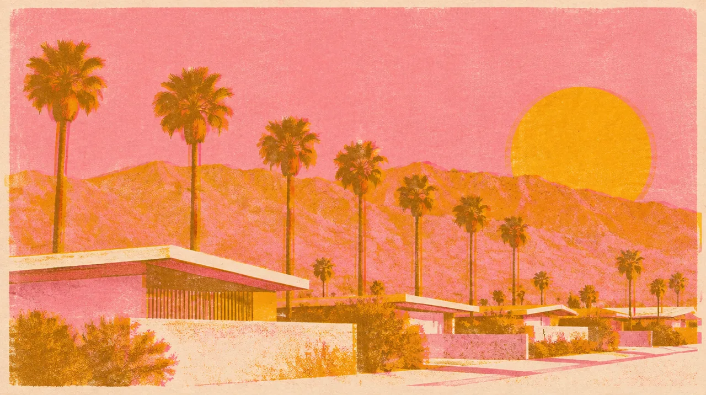

GATHERING · NOV 06 TO 09 · Palm Springs
PALM SPRINGS · PRIDE + BIRTHDAY
Pride. My birthday. Our people.
44 days out
- When
- Nov 6 to Nov 9, 2026
- Where
- Downtown + Arenas District · Birthday November 9, Palm Springs
In the mix
Palm Springs Pride with Shannon Murray, Joe, Mason and Alex Rogers. Shannon is our host, and one of my dearest friends since San Francisco in the 1990s. Pride runs November 6 to 8; my birthday is Monday, November 9. This chapter holds both.